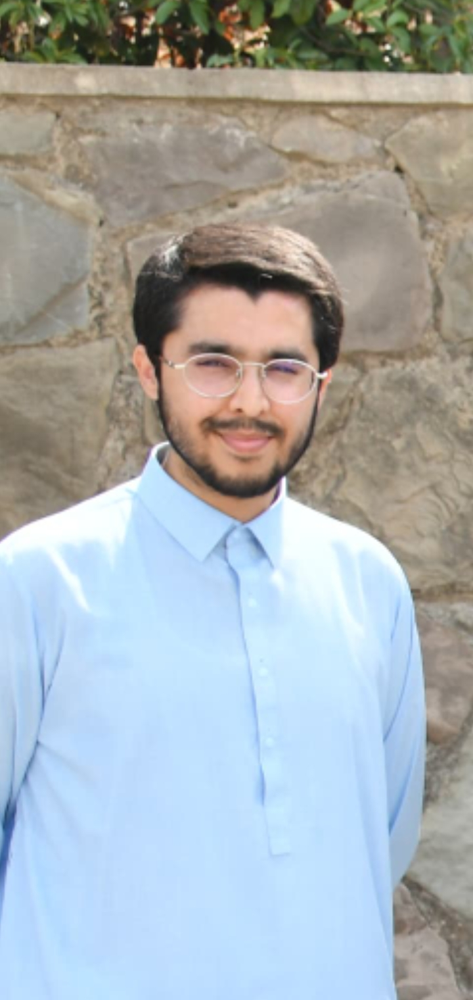
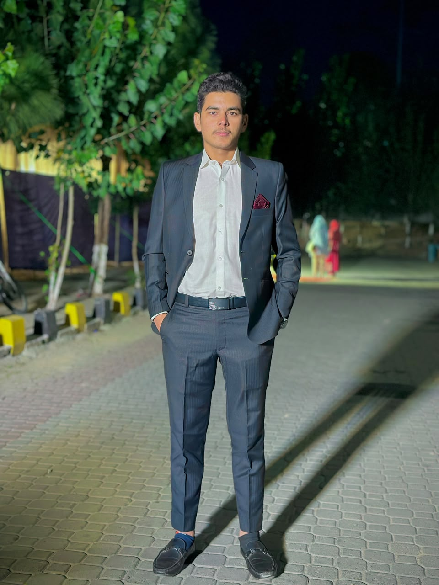

Find the exact edit that broke your RNA design.
automated regression search across edit history
A small, testable idea for a missing tool in RNA design — backed by Antematter.io.
Designers reward memory, not proof. Every round is a guess.
Same shape as git bisect — a chain of edits, a score that can regress, a binary search between them.
Slow — doesn't scale past a few rounds
Unreliable, no audit trail
Quietly lowers final design quality
RNA design has no borders on ambition. It still has one on proof.
Building sequence-design software got proven. Verifying what broke didn't.
mRNA, CRISPR, and oligo teams running many-round optimization campaigns before the lab.
Benchling, Synthego, and similar already store history and run scoring — this plugs in as a feature.
SOURCES: STRAITS RESEARCH · PRECEDENCE RESEARCH · RESEARCH AND MARKETS (2026) · CONTRARY RESEARCH · TRACXN · SACRA
Every design version — hand-edited or model-regenerated — saved as a point in a chain, like a save point.
Plug in existing tools: folding stability, expression, immune risk, off-target — run per edit.
On a regression, check the midpoint, narrow to the half with the drop, repeat until one edit remains.
Noise-aware threshold — biology scores aren't pass/fail; a regression is a drop beyond the oracle's normal noise band.
Per-property verdicts — one edit can help stability and hurt expression at once, so results are reported per tracked property.
| Tool | What it already does | What it doesn't do |
|---|---|---|
| Benchling | Version history + CRISPR guide scoring. 200,000+ scientists. | No automatic search across edit history |
| Synthego / CHOPCHOP / CRISPOR | Score & rank individual guide RNA designs | One design at a time — no history search |
| git / GitHub | Full version control + bisect, for code | Built for pass/fail tests, not biology scores |
| BioStudio / CellRepo | Version control ideas for genome editing & provenance | Not built for scoring many small RNA edits |
§ Landscape review confirms no existing tool closes this gap — version history and scoring exist separately at Benchling, Synthego, and others
§ Informal conversations with RNA/CRISPR design practitioners on the workflow pain point
§ Technical architecture scoped as a lightweight add-on, not a new platform
Secure 1 pilot partner
A lab or company willing to share real design history for validation
Build working prototype
Edit-chain + 1-2 open scoring tools + bisection search logic
Run against historic data
Confirm the tool finds edits already known to have caused regressions

Technical co-founder. Owns architecture and delivery alongside Jawad.

Technical co-founder. Committed to relocating and building in Abu Dhabi for the programme.
AI solutions engineering firm — production-grade agentic systems for regulated, high-stakes workflows.
Direct access to explainable-AI and agentic-systems engineering discipline from day one — de-risking the technical build.
Total Year 1: $370K–$560K independently funded | Academic/open-source path (Path B): $150K–$300K via grant-funded grad researchers
A small, testable idea — not a moonshot. A sharp, buildable gap with a clear first customer.
Access Programme support to relocate Jawad and build the core team in Abu Dhabi
Biotech / RNA design labs and companies for real pilot validation
Test Phase I–II before committing to full-scale funding
Details to be added — replace the placeholders below.